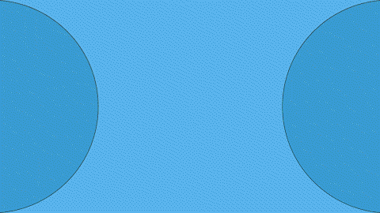
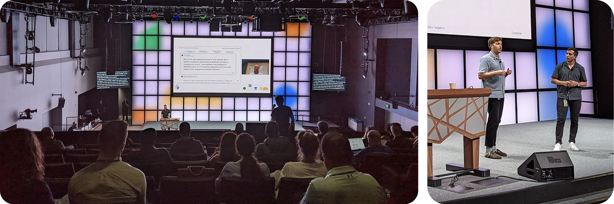
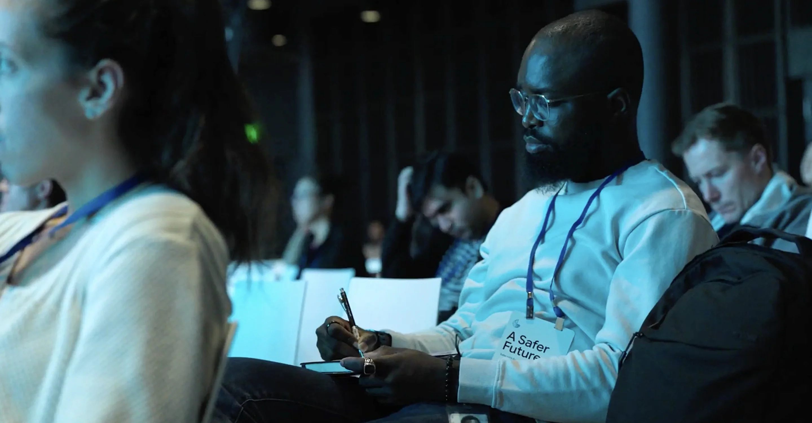
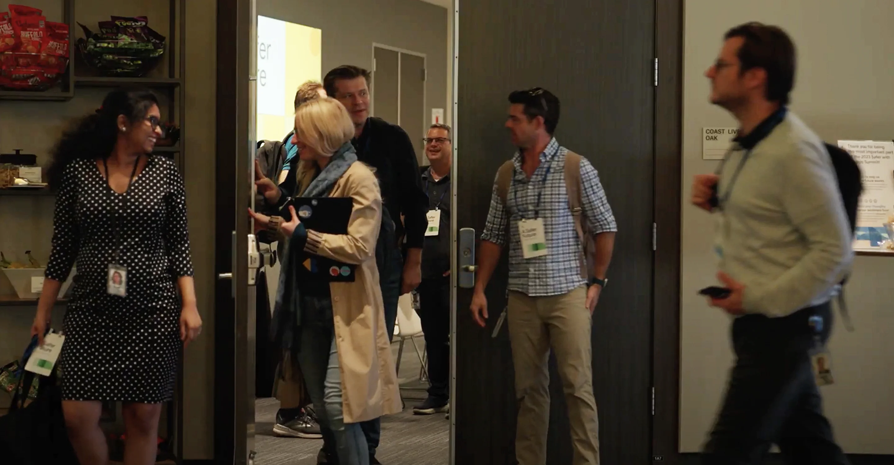
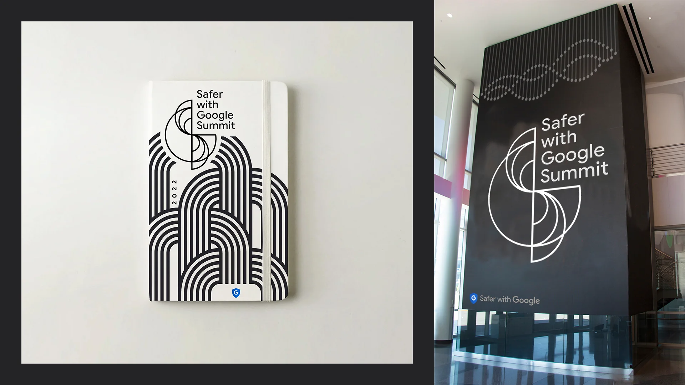
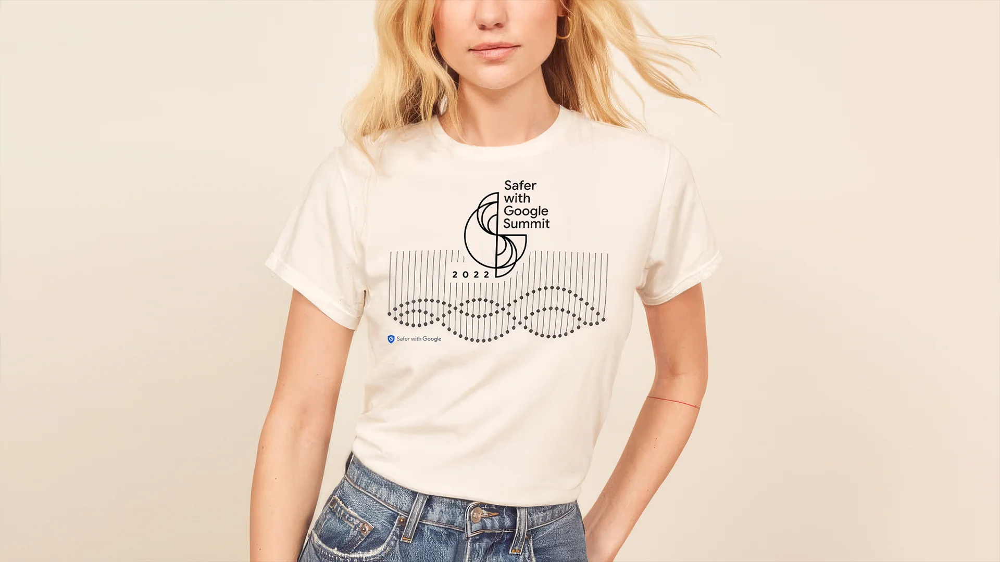
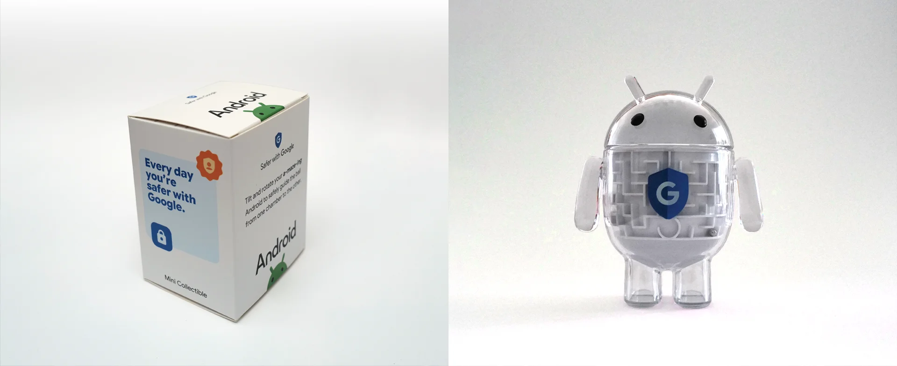
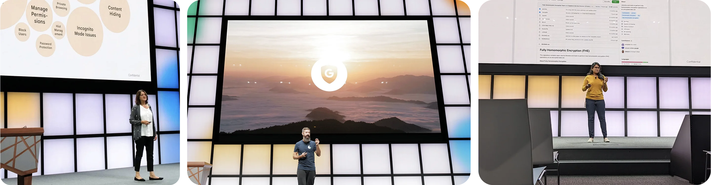

Brand Strategy · Event Design
Safer with Google Summit
Privacy, safety, and security teams from every function, turned into one shared voice across 80+ talks a year









About
The Safer with Google Summit is Google’s annual internal gathering for the people who work on privacy, content safety, and security. They come from every function: engineering, product management, UX, research, legal, public policy, marketing, and public relations. At the summit they meet and learn from each other, share the research and development they’re working on and the challenges they’re facing, and leave better able to help each other, align, and work together.
Since 2022 I’ve been the summit’s creative director, responsible for both its brand and the experience of the event itself. My team built a design system sturdy enough to carry 80+ presentations a year (other teams started coming to us for design help, too), designed bespoke keynote decks for six executives each year, directed the design of the social events, and handled all the event collateral.
- Role
- Creative direction, brand system, summit experience design, executive keynote decks
- Since
- 2022, every year
- Who comes
- Privacy, content safety, and security practitioners from engineering, product, UX, research, legal, public policy, marketing, and PR